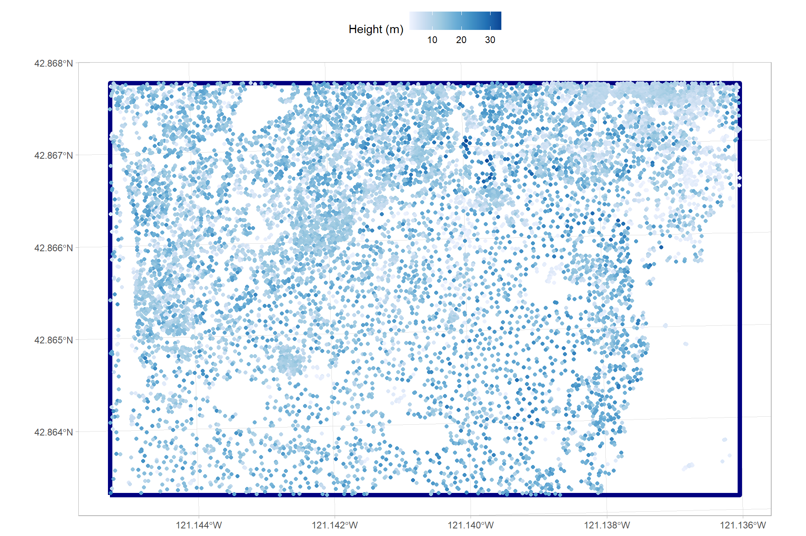
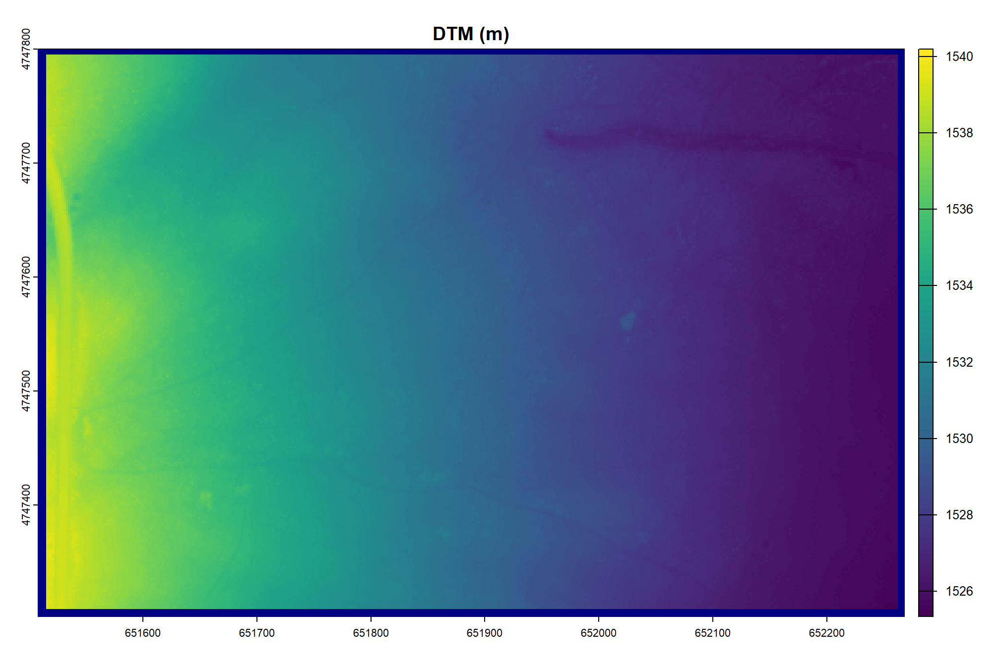
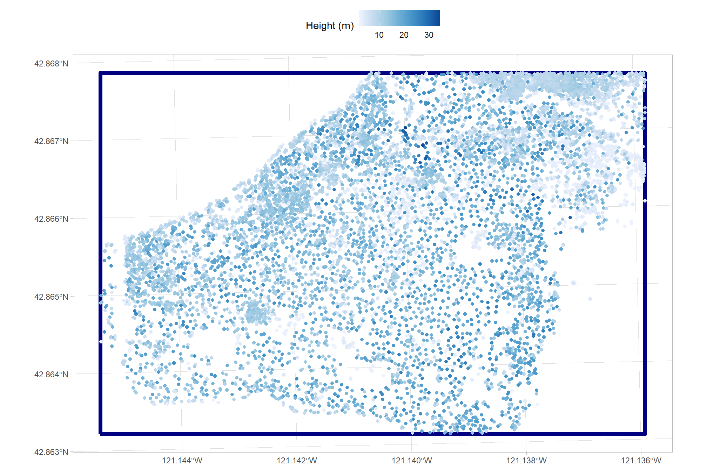
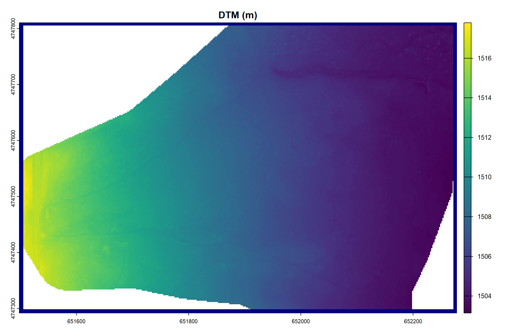

Section 8 cloud2trees to LANL TREES
we format the cloud2trees::cloud2trees() outputs to meet the requirements of the LANL TREES program, which prepares data for fire modeling. This data formatting process is accomplished via cloud2trees::cloud2trees_to_lanl_trees(). The current iteration of this function requires the user to specify surface fuel load parameters, such as litter and herbaceous/grass fuel loads, which are assumed constant across the study area.
8.1 Surface Fuel Quantification
let’s pull in surface fuel loading parameters which were determined through a literature review (Gallagher et al. 2017; Ottmar & Andreu 2007)
surface_fuels <-
readxl::read_excel("../data/Surface_Fuels.xlsx") %>%
dplyr::mutate(dplyr::across(
.cols = tidyselect::contains("%")
, ~ .x*.01
)) %>%
dplyr::rename_with(
~ stringr::str_replace_all(.x,"%","pct") %>%
stringr::str_replace_all("[ .]", "_") %>%
stringr::str_replace_all("[^[:alnum:]_]+", "") %>%
tolower()
) %>%
dplyr::rename(study_site=site) %>%
dplyr::mutate(
study_site = study_site %>% stringr::str_to_title() %>% stringr::str_remove_all("[ .]")
# these are somewhat based on the literature assuming Fall timing
, herbaceous_moisture_pct = dplyr::case_when(
is.na(herbaceous_moisture_pct) & study_site == "SycanMarsh" ~ 0.3
, is.na(herbaceous_moisture_pct) & study_site == "FortStewart" ~ 0.95
, is.na(herbaceous_moisture_pct) & study_site == "SaltCabin" ~ 0.3
, is.na(herbaceous_moisture_pct) & study_site == "NewJersey" ~ 0.6
, T ~ herbaceous_moisture_pct
)
) %>%
# put on our fancy labels
dplyr::inner_join(
study_sites_sf %>% sf::st_drop_geometry() %>% dplyr::select(study_site, study_site_lab)
, by = "study_site"
)
# add it to our processing data table
study_sites_processing_sf <- study_sites_processing_sf %>%
dplyr::left_join(surface_fuels %>% dplyr::select(-study_site_lab),by="study_site")
# table it
surface_fuels %>%
tidyr::pivot_longer(
cols = -tidyselect::starts_with("study_site")
) %>%
dplyr::mutate(
fuel_type = stringr::word(name,sep="_")
, name = stringr::str_remove(name, paste0(fuel_type,"_"))
) %>%
tidyr::pivot_wider(names_from = name, values_from = value) %>%
dplyr::mutate(
dplyr::across(
tidyselect::ends_with("_pct"), ~scales::percent(.x,accuracy=1)
)
# , dplyr::across(
# dplyr::where(is.numeric), ~scales::comma(.x)
# )
) %>%
dplyr::select(-study_site) %>%
kableExtra::kbl(
caption = "surface fuel loading parameters determined through a literature review"
, col.names = c(
"site","layer"
, "Bulk Density<br>(kg m<sup>-3</sup>)"
, "Height (m)"
, "Moisture"
, "Surface Area<br>to Volume (m)"
)
, escape = F
) %>%
kableExtra::kable_styling() %>%
kableExtra::collapse_rows(columns = 1:2, valign = "top") | site | layer |
Bulk Density (kg m-3) |
Height (m) | Moisture |
Surface Area to Volume (m) |
|---|---|---|---|---|---|
| Sycan Marsh (OR) | litter | 13.440000 | 0.0320 | 9% | 0.0004167 |
| herbaceous | 0.006500 | 0.1500 | 30% | 0.0003333 | |
| Cedar Bridge (NJ) | litter | 28.430000 | 0.0570 | 9% | 0.0004167 |
| herbaceous | 0.007530 | 0.1500 | 58% | 0.0003333 | |
| Fort Stewart (GA) | litter | 19.509000 | 0.0343 | 9% | 0.0004167 |
| herbaceous | 0.100000 | 25.0000 | 95% | 0.0003333 | |
| Salt Cabin (CO) | litter | 10.320000 | 0.0180 | 9% | 0.0004167 |
| herbaceous | 0.001672 | 10.0000 | 30% | 0.0003333 |
8.2 cloud2trees::cloud2trees_to_lanl_trees() example process
let’s use Sycan Marsh (OR) to show how easy it is to use cloud2trees::cloud2trees_to_lanl_trees()
# just one record with surface fuels for ease
processing_info_temp <- study_sites_processing_sf %>%
dplyr::filter(
study_site=="SycanMarsh"
& data_type=="ALS"
)
# save a dir path
my_dir_temp <- tempdir()
# pass info to the fn
cloud2trees_to_lanl_trees_ans_temp <- cloud2trees::cloud2trees_to_lanl_trees(
input_dir = processing_info_temp$fdir # point_cloud_processing_delivery
, study_boundary = processing_info_temp # sf data
, bbox_aoi = T # use a bbox
, buffer = 20
, topofile = "flat"
, cbd_method = "landfire"
, output_dir = my_dir_temp
, fuel_litter = list(
ilitter = 1
, lrho = processing_info_temp$litter_bulk_density_kg_m3
, lmoisture = processing_info_temp$litter_moisture_pct
, lss = processing_info_temp$litter_surface_area_to_volume_m
, ldepth = processing_info_temp$litter_height_m
)
, fuel_grass = list(
igrass = 1
, grho = processing_info_temp$herbaceous_bulk_density_kg_m3
, gmoisture = processing_info_temp$herbaceous_moisture_pct
, gss = processing_info_temp$herbaceous_surface_area_to_volume_m
, gdepth = processing_info_temp$herbaceous_height_m
)
)let’s see what we got
## [1] "tree_list" "aoi" "dtm" "domain_path"
## [5] "topofile_path" "fuellist_path" "treelist_path"check out the tree list points that were cropped to our study boundary with a bounding box and a 20m buffer
ggplot2::ggplot() +
ggplot2::geom_sf(
data = cloud2trees_to_lanl_trees_ans_temp$aoi
, fill = NA, color = "navy", lwd = 2
) +
ggplot2::geom_sf(
data = cloud2trees_to_lanl_trees_ans_temp$tree_list
, mapping = ggplot2::aes(color = tree_height_m)
) +
ggplot2::scale_color_distiller(palette = "Blues", direction = 1) +
ggplot2::labs(color = "Height (m)") +
ggplot2::theme_light() +
ggplot2::theme(legend.position = "top")
check out the DTM that was set to 2m resolution by default and cropped to our study boundary with a bounding box and a 20m buffer
terra::plot(cloud2trees_to_lanl_trees_ans_temp$dtm, main = "DTM (m)")
terra::plot(
cloud2trees_to_lanl_trees_ans_temp$aoi %>%
sf::st_transform(terra::crs(cloud2trees_to_lanl_trees_ans_temp$dtm)) %>%
terra::vect()
, add = T, border = "navy", col = NA
, lwd = 11
)
and what are all of these file paths?
## [1] "C:\\Users\\georg\\AppData\\Local\\Temp\\RtmpYhstyi\\lanl_trees_delivery/Lidar_Bounds.geojson"## [1] "C:\\Users\\georg\\AppData\\Local\\Temp\\RtmpYhstyi\\lanl_trees_delivery/topo.dat"## [1] "C:\\Users\\georg\\AppData\\Local\\Temp\\RtmpYhstyi\\lanl_trees_delivery/fuellist"## [1] "C:\\Users\\georg\\AppData\\Local\\Temp\\RtmpYhstyi\\lanl_trees_delivery\\Cloud2Trees_TreeList.txt"the cloud2trees::cloud2trees_to_lanl_trees() program made a delivery directory for the astute readers
## [1] "Cloud2Trees_TreeList.txt" "dtm_Clipped.tif"
## [3] "fuellist" "Lidar_Bounds.geojson"
## [5] "topo.dat"let’s look at a few records of the fuellist
## [1] "! ----------------------------------"
## [2] "! FIRETEC domain info"
## [3] "! ----------------------------------"
## [4] " nx = 380"
## [5] " ny = 249"
## [6] " nz = 35"
## [7] " dx = 2"
## [8] " dy = 2"
## [9] " dz = 1.0 ! Grid Resolution [m]"
## [10] " aa1 = 0.1 ! Vertical stretching component [default=0.1]"
## [11] " singlefuel = 1 ! Flag forcing single fuel type instead of multiple fuels"let’s look at the structure of the “Cloud2Trees_TreeList.txt” file which does not include column names
readr::read_delim(
cloud2trees_to_lanl_trees_ans_temp$treelist_path
, col_names = F
, progress = F, show_col_types = F
) %>%
dplyr::glimpse()## Rows: 10,392
## Columns: 10
## $ X1 <dbl> 1, 1, 1, 1, 1, 1, 1, 1, 1, 1, 1, 1, 1, 1, 1, 1, 1, 1, 1, 1, 1, 1, …
## $ X2 <dbl> 171.375, 468.125, 533.875, 540.875, 627.875, 657.125, 681.125, 692…
## $ X3 <dbl> 497.875, 497.875, 497.875, 497.875, 497.875, 497.875, 497.875, 497…
## $ X4 <dbl> 7.36, 20.65, 5.56, 9.21, 7.90, 9.11, 10.67, 9.29, 9.03, 17.87, 13.…
## $ X5 <dbl> 3.3592, 2.5000, 2.9067, 3.5722, 3.0063, 3.9859, 2.5000, 3.5516, 2.…
## $ X6 <dbl> 2.1110, 4.2967, 1.0171, 3.3497, 2.2917, 3.0251, 2.9721, 2.8350, 1.…
## $ X7 <dbl> 4.9977, 6.1711, 3.6932, 5.0343, 4.1677, 4.6099, 5.4011, 4.2747, 4.…
## $ X8 <dbl> 0.1241, 0.0774, 0.1464, 0.1464, 0.1581, 0.1334, 0.1416, 0.1416, 0.…
## $ X9 <dbl> 1, 1, 1, 1, 1, 1, 1, 1, 1, 1, 1, 1, 1, 1, 1, 1, 1, 1, 1, 1, 1, 1, …
## $ X10 <dbl> 5e-04, 5e-04, 5e-04, 5e-04, 5e-04, 5e-04, 5e-04, 5e-04, 5e-04, 5e-…8.3 cloud2trees::cloud2trees_to_lanl_trees() everything
as a reminder we processed all of these data
study_sites_processing_sf %>%
sf::st_drop_geometry() %>%
dplyr::select(study_site_lab, data_desc, number_of_points, las_area_ha, fdir) %>%
dplyr::mutate(dplyr::across(dplyr::where(is.numeric),~scales::comma(.x))) %>%
dplyr::rename(cloud2trees_output_dir = fdir) %>%
kableExtra::kbl() %>%
kableExtra::kable_styling()| study_site_lab | data_desc | number_of_points | las_area_ha | cloud2trees_output_dir |
|---|---|---|---|---|
| Fort Stewart (GA) | ALS 2018 | 43,073,560 | 900.0 | ../data/FortStewart/als_2018_processing/point_cloud_processing_delivery |
| Fort Stewart (GA) | ALS 2025 | 340,216,525 | 686.0 | ../data/FortStewart/als_2025_processing/point_cloud_processing_delivery |
| Cedar Bridge (NJ) | ALS 2012 | 80,299,066 | 206.4 | ../data/NewJersey/als_2012_processing/point_cloud_processing_delivery |
| Cedar Bridge (NJ) | UAS LIDAR 2024 | 758,267,426 | 292.0 | ../data/NewJersey/uas_lidar_2024_processing/point_cloud_processing_delivery |
| Salt Cabin (CO) | ALS 2021 | 35,217,823 | 533.7 | ../data/SaltCabin/als_2021_processing/point_cloud_processing_delivery |
| Salt Cabin (CO) | UAS SFM 2024 | 94,513,577 | 27.9 | ../data/SaltCabin/uas_sfm_2024_processing/point_cloud_processing_delivery |
| Sycan Marsh (OR) | ALS 2021 | 68,015,885 | 200.0 | ../data/SycanMarsh/als_2021_processing/point_cloud_processing_delivery |
| Sycan Marsh (OR) | UAS LIDAR 2023 | 200,545,096 | 53.0 | ../data/SycanMarsh/uas_lidar_2023_processing/point_cloud_processing_delivery |
cloud2trees::cloud2trees_to_lanl_trees() all of the cloud2trees::cloud2trees() processed data
# dir
dir_temp <- file.path("c:/Users/georg/Downloads/", "cloud2trees_TREES_data")
if(!dir.exists(dir_temp)){
dir.create(dir_temp)
}
# start at timer
st_temp <- Sys.time()
# every data
ans_temp <-
1:nrow(study_sites_processing_sf) %>%
purrr::map(function(x){
# delivery folder
fp <- file.path(
dir_temp
, paste0(
study_sites_processing_sf$study_site[x]
, "_", stringr::str_replace_all(study_sites_processing_sf$data_desc[x],"[ .]", "_")
)
)
if(!dir.exists(fp)){dir.create(fp)}
# cloud2trees::cloud2trees_to_lanl_trees()
cloud2trees::cloud2trees_to_lanl_trees(
input_dir = study_sites_processing_sf$fdir[x] # point_cloud_processing_delivery
, study_boundary = study_sites_processing_sf %>% dplyr::slice(x) # sf data
, bbox_aoi = T # use a bbox
, buffer = 30
, topofile = "flat"
, cbd_method = "landfire"
, output_dir = fp
, fuel_litter = list(
ilitter = 1
, lrho = study_sites_processing_sf$litter_bulk_density_kg_m3[x]
, lmoisture = study_sites_processing_sf$litter_moisture_pct[x]
, lss = study_sites_processing_sf$litter_surface_area_to_volume_m[x]
, ldepth = study_sites_processing_sf$litter_height_m[x]
)
, fuel_grass = list(
igrass = 1
, grho = study_sites_processing_sf$herbaceous_bulk_density_kg_m3[x]
, gmoisture = study_sites_processing_sf$herbaceous_moisture_pct[x]
, gss = study_sites_processing_sf$herbaceous_surface_area_to_volume_m[x]
, gdepth = study_sites_processing_sf$herbaceous_height_m[x]
)
)
})
# end a timer
end_temp <- Sys.time()
secs_temp <- difftime(end_temp,st_temp,units="secs") %>% as.numeric()
# set names
names(ans_temp) <- paste0(
study_sites_processing_sf$study_site
, "_", stringr::str_replace_all(study_sites_processing_sf$data_desc,"[ .]", "_")
)to process all of that data took 46.4 seconds (0.77 minutes), not bad, not bad
just to confirm we got the data we expected, let’s look at one result using the Sycan Marsh UAS Lidar 2023 data
cloud2trees_to_lanl_trees_ans_temp <- ans_temp$SycanMarsh_UAS_LIDAR_2023
cloud2trees_to_lanl_trees_ans_temp %>% names()## [1] "tree_list" "aoi" "dtm" "domain_path"
## [5] "topofile_path" "fuellist_path" "treelist_path"check out the tree list points that were cropped to our study boundary with a bounding box and a 20m buffer
ggplot2::ggplot() +
ggplot2::geom_sf(
data = cloud2trees_to_lanl_trees_ans_temp$aoi
, fill = NA, color = "navy", lwd = 2
) +
ggplot2::geom_sf(
data = cloud2trees_to_lanl_trees_ans_temp$tree_list
, mapping = ggplot2::aes(color = tree_height_m)
) +
ggplot2::scale_color_distiller(palette = "Blues", direction = 1) +
ggplot2::labs(color = "Height (m)") +
ggplot2::theme_light() +
ggplot2::theme(legend.position = "top")
check out the DTM that was set to 2m resolution by default and cropped to our study boundary with a bounding box and a 20m buffer
terra::plot(cloud2trees_to_lanl_trees_ans_temp$dtm, main = "DTM (m)")
terra::plot(
cloud2trees_to_lanl_trees_ans_temp$aoi %>%
sf::st_transform(terra::crs(cloud2trees_to_lanl_trees_ans_temp$dtm)) %>%
terra::vect()
, add = T, border = "navy", col = NA
, lwd = 11
)
and what are all of these file paths?
## [1] "C:\\Users\\georg\\Downloads\\cloud2trees_TREES_data\\SycanMarsh_UAS_LIDAR_2023\\lanl_trees_delivery/Lidar_Bounds.geojson"## [1] "C:\\Users\\georg\\Downloads\\cloud2trees_TREES_data\\SycanMarsh_UAS_LIDAR_2023\\lanl_trees_delivery/topo.dat"## [1] "C:\\Users\\georg\\Downloads\\cloud2trees_TREES_data\\SycanMarsh_UAS_LIDAR_2023\\lanl_trees_delivery/fuellist"## [1] "C:\\Users\\georg\\Downloads\\cloud2trees_TREES_data\\SycanMarsh_UAS_LIDAR_2023\\lanl_trees_delivery\\Cloud2Trees_TreeList.txt"let’s look at a few records of the fuellist
## [1] "! ----------------------------------"
## [2] "! FIRETEC domain info"
## [3] "! ----------------------------------"
## [4] " nx = 390"
## [5] " ny = 259"
## [6] " nz = 36"
## [7] " dx = 2"
## [8] " dy = 2"
## [9] " dz = 1.0 ! Grid Resolution [m]"
## [10] " aa1 = 0.1 ! Vertical stretching component [default=0.1]"
## [11] " singlefuel = 1 ! Flag forcing single fuel type instead of multiple fuels"let’s look at the structure of the “Cloud2Trees_TreeList.txt” file which does not include column names
readr::read_delim(
cloud2trees_to_lanl_trees_ans_temp$treelist_path
, col_names = F
, progress = F, show_col_types = F
) %>%
dplyr::glimpse()## Rows: 8,606
## Columns: 10
## $ X1 <dbl> 1, 1, 1, 1, 1, 1, 1, 1, 1, 1, 1, 1, 1, 1, 1, 1, 1, 1, 1, 1, 1, 1, …
## $ X2 <dbl> 388.875, 558.625, 575.625, 638.875, 699.375, 728.125, 736.375, 740…
## $ X3 <dbl> 517.875, 517.875, 517.875, 517.875, 517.875, 517.875, 517.875, 517…
## $ X4 <dbl> 10.0416, 11.2904, 9.6332, 7.9933, 10.3822, 5.4345, 9.3381, 8.4360,…
## $ X5 <dbl> 5.5000, 4.6646, 2.5000, 4.1667, 4.7420, 1.5000, 4.5000, 3.5000, 5.…
## $ X6 <dbl> 1.4384, 4.1459, 2.0921, 1.9747, 4.2689, 0.8463, 3.1413, 2.4430, 1.…
## $ X7 <dbl> 8.2307, 5.0031, 4.6430, 1.9327, 5.9543, 3.4247, 4.4341, 6.5833, 4.…
## $ X8 <dbl> 0.4253, 0.1613, 0.0972, 0.1065, 0.1192, 0.0676, 0.0676, 0.0676, 0.…
## $ X9 <dbl> 1, 1, 1, 1, 1, 1, 1, 1, 1, 1, 1, 1, 1, 1, 1, 1, 1, 1, 1, 1, 1, 1, …
## $ X10 <dbl> 5e-04, 5e-04, 5e-04, 5e-04, 5e-04, 5e-04, 5e-04, 5e-04, 5e-04, 5e-…